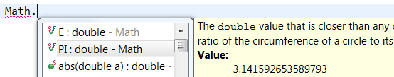

Java Editor

and the value of a constant:

Java Formatter
The settings can be found in the Profile Editor (Preferences > Java > Code Style > Formatter > Edit...) under the Line Wrapping > Wrapping settings > Binary expressions subsection.

@return or @deprecated.
The settings can be found in the Profile Editor (Preferences > Java > Code Style > Formatter > Edit...) under the Comments > Javadocs section.